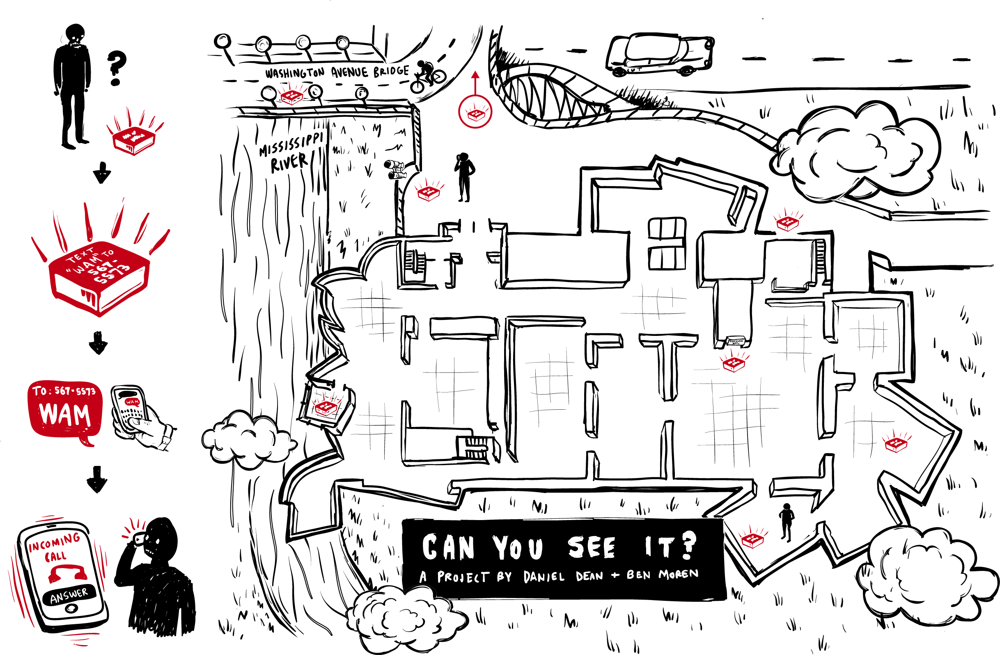

Can You See It? was commissioned and presented by the Weisman Art Museum during the 20 year anniversary party "The Big WAM Bash". Curated by Diane Mullin.
Can You See It? is a site-determined, experiential media project that explores the problematics of the museum as a cultural gatekeeper, particularly as manifest at the Weisman Museum, as well as the triumvirate of time, memory, and history. As a cultural institution situated on the campus of the University of Minnesota, a large educational institution, the Museum is tasked with being a teaching museum as well as a resource for the local community. This primarily educational mission led to the development of these themes within eight individual stories as vehicles that provide an opportunity for critical thinking and personal reflection during a moment of celebration.
Guests visiting the museum were given a hand-illustrated map of the Museum and the surrounding grounds as visual guides to discovering and experiencing hidden narratives reflecting on these themes. Illuminated markers were placed at locations inside of the museums galleries and outside on the surrounding grounds. Each marker offers a request to text message a specific word (i.e. legacy) to a phone number. Within a few seconds, the participant received a phone call wherein a voice spoke to them for a short while. The voice described where the participant was as if it was watching them, and directed them to carefully investigate the particular space and objects nearby. The unfamiliar voice reflected on the aforementioned themes through fictional stories for each specific site / marker. Eight of these seemingly unconnected vignettes were available to participants and each was spoken by a different voice. But, taken together, they rounded out a dynamic view of the themes of the project and empower the participant to think critically about, art, architecture, personal legacy, economics and urban positioning in the role of the Museum.
A collaboration with Daniel Dean. Map illustration by Trevor Burks. Map printing by red76. Wood fabrication by Tandem Made.
Can you see it?
2013
call center software, audio recordings, wood, acrylic
8 variable duration vignettes